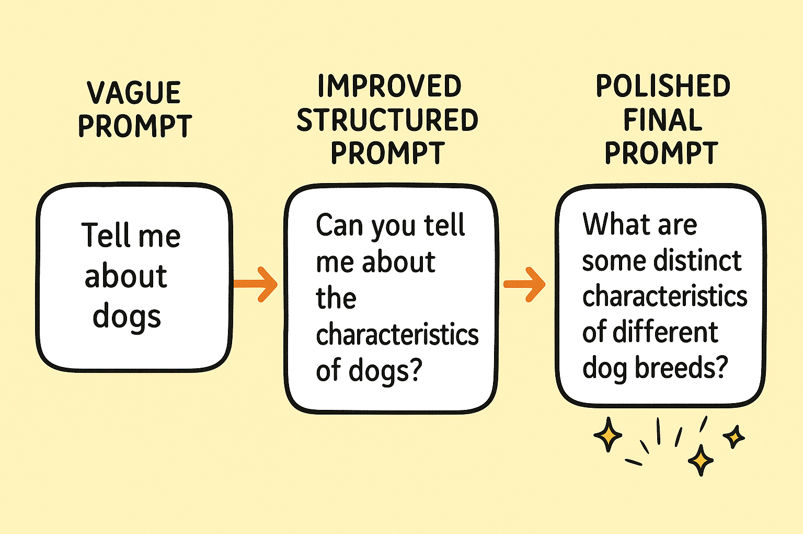
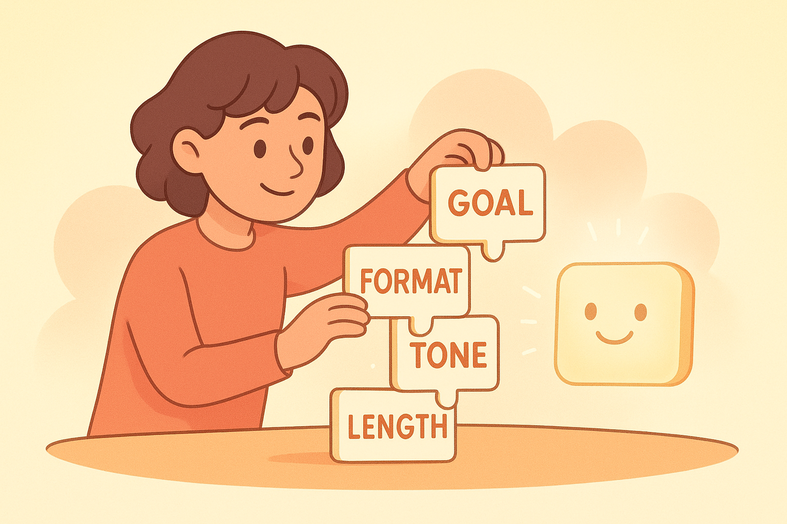

5 Klare Anweisungen, klare Ergebnisse: Instruction Prompting
5.1 Die Geschichte von Lina – und ihrem fast gescheiterten Schulprojekt
Stell dir Lina vor. 14 Jahre alt, kreativ, motiviert – und ein bisschen chaotisch. Ihr Schulprojekt für den Biologieunterricht steht vor der Tür: ein kleines digitales Poster über „Bienen und ihre Bedeutung für Ökosysteme“. Eigentlich sollte das kein großes Problem sein. Doch aus „eigentlich“ wurde Stress. Die Informationen waren unübersichtlich, die Zeit war knapp, und Lina wusste nicht mehr, wo sie anfangen sollte.
Also öffnete sie ChatGPT.
Ihr erster Versuch:
„Bitte hilf mir bei meinem Projekt über Bienen.“
Die Antwort war okay – ein paar Infos, ein paar Ideen. Aber es fühlte sich an wie eine Internet-Suchmaschine in schnell. Nichts strukturierter, kein roter Faden. Es war das typische Ergebnis eines vagen, unklaren Prompts.
Lina versuchte es erneut:
„Erstelle mir bitte ein übersichtliches Poster über Bienen.“
Dieses Mal bekam sie Absätze voller Fakten, aber das Poster sah nur in ihrem Kopf gut aus. Die Antwort der KI war wieder nicht falsch – aber sie war zu allgemein, zu frei, zu wenig auf die Aufgabe zugeschnitten.
Dann erinnerte sich Lina an eine Sache, die ihre Informatiklehrerin einmal gesagt hatte:
„KI arbeitet wie ein sehr fleißiger, aber sehr wörtlicher Assistent. Sag genau, was du willst – und du bekommst es.“
Also setzte sie sich hin und schrieb ihren dritten Prompt:
„Erstelle mir ein übersichtliches Poster über Bienen für einen 8.-Klasse-Biologieunterricht.
Verwende bitte folgende Struktur:
– Titel
– Kurze Einleitung
– 3 wichtigste Gründe, warum Bienen wichtig sind
– Ein einfaches Beispiel, das Jugendliche verstehen
Bitte max. 150 Wörter und in leicht verständlicher Sprache.“
Und das war der Moment, in dem Lina das allererste Mal dachte:
„Oha. Das ist ja richtig gut!“
Das Ergebnis war klar strukturiert, genau auf ihr Schulprojekt zugeschnitten, und sie konnte es fast 1:1 übernehmen. Das war Linas erster Kontakt mit dem, was wir in diesem Kapitel lernen:
5.2 Instruction Prompting
👉 Die Kunst, präzise Anweisungen zu geben.Instruction Prompting ist nicht kompliziert. Es ist sogar das simpelste und wichtigste KI-Handwerkzeug überhaupt.
Wenn du lernst, klare Anweisungen zu formulieren:
- bekommst du bessere Ergebnisse,
- sparst du Zeit und Frust,
- und kannst sogar schwache Eingaben in starke Ergebnisse verwandeln.
Wo kreative Prompts manchmal chaotisch wirken, sorgt Instruction Prompting für Ordnung. Es ist das kommunikative Fundament jeder guten KI-Nutzung.
5.3 Warum Klarheit wichtiger ist als Kreativität
Viele glauben: „Um gute KI-Ergebnisse zu bekommen, muss ich super kreativ sein.“
Das stimmt – aber erst später.
Denn in 90 % der Fälle funktioniert KI am besten, wenn du ihr klipp und klar sagst:
- Was sie tun soll,
- Wie sie es tun soll,
- In welchem Umfang,
- Für wen,
- In welchem Stil,
- Und welche Grenzen es gibt.
Die KI ist nicht beleidigt, wenn du streng bist. Im Gegenteil: Sie liebt Grenzen. Grenzen machen ihre Arbeit leichter.
Ein kreativer, aber vager Prompt führt zu schwammigen Antworten:
„Mach eine kreative Präsentation über erneuerbare Energien.“
Was bekommst du? Einen Text, der wie ein Schulbuch klingt.
Ein klarer Prompt dagegen führt zu präzisen Ergebnissen:
„Erstelle eine 6-Folien-Präsentation über erneuerbare Energien für Schüler der 10. Klasse.
Jeder Slide soll:
– einen Titel
– 2–3 kurze Bullet Points
– und ein Beispiel enthalten.
Schreibe neutral, verständlich und ohne Fachbegriffe.“
Jetzt liefert die KI plötzlich strukturiert, kompakt und zielgruppengerecht.
5.4 Regeln, Einschränkungen & Formatvorgaben
Warum sind Formatvorgaben so mächtig?
Weil sie die KI auf das Ziel ausrichten.
Hier sind die wichtigsten Arten von Vorgaben, die du im Instruction Prompting einsetzen kannst:
👉 1. LängenbegrenzungenSätze wie:
- „max. 100 Wörter“
- „in 5 Bullet Points“
- „2 kurze Absätze“
…sind Gold wert. Sie verhindern Romanantworten.
👉 2. ZielgruppenSobald du sagst:
- „für 10-Jährige“
- „für Anfänger“
- „für Studierende“
…ändert die KI automatisch Sprache, Beispiele, Tonfall und Aufbau.
👉 3. StrukturvorgabenBeispiele:
- „Schreibe nach diesem Muster: Problem → Lösung → Beispiel.“
- „Nutze die Struktur: Einleitung – Hauptteil – Mini-Übung – Tipps.“
Struktur = Klarheit.
Klarheit = Qualität.
👉 4. Stilvorgaben- „Erkläre wie ein geduldiger Tutor.“
- „Schreibe sachlich und neutral.“
- „Nutze einfache Sprache.“
Damit steuerst du die gesamte Atmosphäre der Antwort.
👉 5. Inhaltsgrenzen- „Keine komplizierten Fachbegriffe.“
- „Keine Wiederholungen.“
- „Nur praktische Beispiele.“
Begrenzungen machen Texte fokussiert.
👉 6. Output-FormateEin paar Beispiele:
- Tabellen
- Listen
- Checklisten
- Poster
- Schritt-für-Schritt-Anleitungen
- Dialoge
- Lernkarten
Je genauer das Format, desto hilfreicher das Ergebnis.
5.5 Die sechs Formulierungen, die IMMER funktionieren
Wenn du nur diese sechs Satzanfänge beherrschst, bist du im Instruction Prompting schon exzellent:
👉 1. „Erkläre es mir so, als wäre ich …“
(z. B. 12 Jahre alt, Anfänger, Schüler)
Warum es wirkt: Die KI passt Sprache, Tempo und Komplexität automatisch an.
👉 2. „Nutze diese Struktur: …“
Struktur ist wie ein Skelett – ohne sie fällt der Text auseinander.
👉 3. „Gib mir eine Schritt-für-Schritt-Anleitung.“
Ideal für alles, was du lernen oder üben willst.
👉 4. „Fasse es kurz zusammen – maximal X Wörter.“
Begrenzt Textlänge → bessere Übersicht.
👉 5. „Gib mir ein Beispiel, das … zeigt.“
Beispiele machen jede KI-Antwort sofort verständlicher.
👉 6. „Formatiere das Ergebnis als …“
(z. B. Tabelle, Liste, Mindmap in Textform, Erklärungskarten)
Formate sind wie Werkzeuge: Je besser du das Werkzeug wählst, desto besser das Endergebnis.
5.6 Praxisfall: Hausaufgabe, Projekt, Erklärung (Schul-Edition)
Stell dir vor, du hast die folgende Hausaufgabe in Geschichte:
„Erkläre die Französische Revolution.“ = viel zu allgemein.
Ein guter Schüler-Prompt wäre:
„Erkläre die Französische Revolution in maximal 200 Wörtern für Schüler der 8. Klasse.
Nutze diese Struktur:
– Was war der Auslöser?
– Warum war die Bevölkerung unzufrieden?
– Was ist in den wichtigsten 3 Stationen passiert?
– Warum ist das Thema heute noch wichtig?
Schreibe leicht verständlich und ohne Fachbegriffe.“
Oder du brauchst ein Projekt für Kunst:
„Erstelle drei kreative Projektideen für das Thema ‚Street Art‘.
Jede Idee soll enthalten:
– eine kurze Beschreibung
– das benötigte Material
– einen Vorschlag, wie man es in der Schule umsetzen kann.“
Oder du willst eine Erklärung, die du wirklich verstehst:
„Erkläre mir Fotosynthese in 5 Bullet Points.
Dabei soll jeder Punkt nur einen Satz haben.“
Alle drei Beispiele haben etwas gemeinsam:
✔ klare Struktur
✔ Zielgruppe angegeben
✔ Umfang festgelegt
✔ klare Aufgabe
Das ist Instruction Prompting in Bestform.
5.7 Mini-Übung: Verbessere diese Prompts
Probier es selbst:
👉 Schlechter Prompt:
„Hilf mir, Brüche zu verstehen.“
→ Ergebnis: zu allgemein.
👉 Besserer Prompt:
„Erkläre mir Brüche wie für einen 12-jährigen Schüler.
Nutze drei kurze Beispiele aus dem Alltag und maximal 120 Wörter.“
👉 Schlechter Prompt:
„Mach mir eine Liste über gesunde Ernährung.“
→ Ergebnis: langweilig, unklar.
👉 Besserer Prompt:
„Erstelle eine übersichtliche Liste mit 6 Alltags-Tipps für gesunde Ernährung, speziell für Jugendliche mit wenig Zeit.
Jeder Tipp maximal 12 Wörter. Format: Bullet Points.“
👉 Schlechter Prompt:
„Schreib einen Text über Klimawandel.“
→ Ergebnis: Schulbuch.
👉 Besserer Prompt:
„Erstelle eine 5-Satz-Erklärung über den Klimawandel, die sich an 9.-Klässler richtet.
Nutze: Ursache → Wirkung → Beispiel → Problem → Lösung.“

Wenn du diese Prinzipien verstanden hast, wirst du merken, wie KI plötzlich nicht nur „hilft“, sondern für dich arbeitet. Und genau darum geht es in den nachfolgenden Abschnitten dieses Kapitels.
Im ersten Teil dieses Kapitels hast du gesehen, wie eine KI durch klare, strukturierte Anweisungen plötzlich Dinge liefert, die vorher unmöglich wirkten. Jetzt vertiefen wir diese Fähigkeit. Dies ist der Moment im Buch, an dem du spürst: Okay, ich kontrolliere das Ding. Ich kann es lenken. Nicht durch komplizierte Tricks, sondern durch klare Formulierungen, Regeln, Formatvorgaben und eine Handvoll Prompt-Bausteine, die immer funktionieren.
Du wirst in diesem Kapitel merken, dass KI weniger ein Werkzeug der Fantasie ist – und viel mehr ein Werkzeug der Präzision.
5.8 Warum KI auf klare Strukturen reagiert (und wie du das ausnutzt)
Vielleicht hattest du selbst schon einmal diese Situation: Du fragst eine KI etwas wie:
„Kannst du mir helfen, das zu erklären?“
Und die Antwort ist … irgendwie okay, aber nicht super hilfreich.
Dann formulierst du präziser:
„Erkläre das Thema so, als wäre ich 12 Jahre alt, nutze ein Beispiel und fasse danach die drei wichtigsten Punkte in Bullet-Points zusammen.“
Und plötzlich ist die Antwort zehnmal besser.
Das ist kein Zufall. KI-Modelle funktionieren wie Muster-Vervollständiger. Sie erkennen Strukturen, erfüllen Erwartungen und orientieren sich stark an Form, Ton, Aufbau und Beispielen. Je klarer du deine Erwartungen formulierst, desto enger kann die KI ihr Muster an dein Ziel anpassen.
Ein unklarer Prompt = endlose Möglichkeiten → mittelmäßiges Ergebnis
Ein klarer Prompt = klare Erwartung → starkes Ergebnis
Das ist der zentrale Hebel des Instruction Prompting.
5.9 Regeln sind keine Einschränkung – sie sind Superkräfte
Viele Nutzer denken: „Wenn ich der KI Regeln gebe, wird sie weniger kreativ.“ In Wirklichkeit passiert das Gegenteil.
Regeln schärfen die Kreativität. Kreativität braucht Grenzen. Eine KI kann endlose Arten von Texten erzeugen. Wenn du sie nicht einengst, weiß sie nicht, welche Richtung du meinst.
Beispiele für nützliche Regeln:
- Länge: „Maximal 150 Wörter.“
- Ton: „Motivierend, aber nicht kitschig.“
- Struktur: „In drei Abschnitten: Problem, Lösung, Beispiel.“
- Verbote: „Keine Fachbegriffe. Keine Metaphern.“
- Ziele: „Ich möchte das in der Schule präsentieren.“
Jede Regel macht deine Anfrage nicht enger, sondern zielgerichteter – und das erhöht die Qualität deiner Ergebnisse massiv.
5.10 Formatvorgaben: Der unterschätzte Königsweg
Eine der mächtigsten Techniken im Instruction Prompting ist es, der KI genau zu sagen, wie das Ergebnis aussehen soll.
Nicht:
„Schreibe eine Erklärung zum Klimawandel.“
Sondern:
„Schreibe eine Erklärung zum Klimawandel in folgendem Format:
Abschnitt 1: Kurze Definition (2 Sätze)
Abschnitt 2: Beispiel aus dem Alltag
Abschnitt 3: Warum das wichtig ist
Abschnitt 4: Drei Bullet-Points zum Mitnehmen“
Wenn die KI weiß, in welchem Format sie antworten soll, erledigt sie zwei Aufgaben gleichzeitig:
- Sie erstellt den Inhalt.
- Sie baut ihn automatisch in deine gewünschte Struktur.
Das spart dir Zeit, sorgt für Klarheit und macht deine Ergebnisse konsistenter – egal, ob du etwas für die Schule, ein Projekt oder Social Media brauchst.
5.11 Die 6 Formulierungen, die immer funktionieren
Wenn du diese 6 Bausteine beherrschst, wirst du etwa 80 % aller KI-Aufgaben erfolgreich lösen können.
👉 1. „Erkläre X für Zielgruppe Y.“
Beispiel: „Erkläre die Photosynthese für 12-jährige Schüler.“
👉 2. „Nutze folgendes Format: …“
Beispiel: „Nutze eine 3-Schritt-Erklärung mit Beispiel am Ende.“
👉 3. „Begrenze die Länge auf …“
Beispiel: „Maximal 120 Wörter.“
👉 4. „Schreibe im Stil von …“
Beispiel: „Schreibe im Stil einer Lernkarte.“
👉 5. „Füge ein Beispiel ein.“
Beispiel: „Gib ein Beispiel, das jeder Jugendliche versteht.“
👉 6. „Verbessere diesen Text nach folgenden Regeln: …“
Beispiel:
„Verbessere diesen Text nach folgenden Regeln:
– kürzer
– klarer
– aktiver geschrieben“
Wenn du unsicher bist, was du der KI sagen sollst, nimm einfach zwei oder drei dieser Formulierungen – und du wirst ein gutes Ergebnis bekommen.
5.12 Praxisfall: Eine echte Hausaufgaben-Situation
Stell dir vor, du steckst in einer typischen Schulsituation:
Du verstehst ein Kapitel im Biologie-Unterricht nicht, musst morgen ein Mini-Referat halten und hast keine Ahnung, wie du es strukturieren sollst. Früher: Panik, Frust, YouTube-Overload, Hoffnung, dass irgendwer aus der Klasse eine Lösung hat.
Heute: Du weißt, wie du die KI steuerst.
👉 Ausgangslage
Du hast in deinem Bio-Buch eine komplizierte Seite zum Thema „Mitochondrien“. Der Text ist unverständlich, du musst aber 2 Minuten darüber sprechen.
👉 Schlechter Prompt (typisch):
„Erklär mir Mitochondrien.“
Ergebnis: Eine Erklärung, aber oft zu kompliziert, zu lang, nicht gut strukturiert.
👉 Starker Instruction-Prompt:
„Erkläre Mitochondrien für 9.-Klässler.
Nutze folgende Struktur:
1. Definition in 2 Sätzen
2. Warum sie wichtig sind (3 Sätze)
3. Beispiel aus dem Alltag
4. Drei Bullet-Points zum Merken
Tone: freundlich, locker, keine Fremdwörter.“
Das Ergebnis ist plötzlich perfekt nutzbar. Warum? Weil du alle relevanten Rahmenbedingungen gesetzt hast:
- Zielgruppe
- Struktur
- Länge
- Stil
- Ton
- Beispiel
Das ist Instruction Prompting in seiner reinsten Form.
5.13 Praxisfall 2: Projektarbeit retten
Erinnerst du dich an die Schülerin vom Anfang des Kapitels, die ihr Schulprojekt retten wollte?
Um zu sehen, wie mächtig klare Instruktionen wirklich sind, schauen wir uns an, wie sie die KI für unterschiedliche Aufgaben nutzt:
👉 a) Sie braucht eine klare Struktur für ihren Vortrag
Prompt:
„Erstelle eine klare, leicht verständliche Gliederung für einen 5-minütigen Vortrag über erneuerbare Energien.
Struktur: Einleitung – Hauptteil – Schluss.
Zielgruppe: Schüler der 8. Klasse.
Stil: locker, verständlich, motivierend.“
👉 b) Sie braucht eine schriftliche Erklärung für das Handout
Prompt:
„Schreibe einen Text für das Handout (max. 150 Wörter).
Struktur:
– Was sind erneuerbare Energien?
– Warum brauchen wir sie?
– Beispiel aus dem Alltag.
Ton: einfach, klar, ohne Fachbegriffe.“
👉 c) Sie will eine Zusammenfassung für ihre Lehrerin
Prompt:
„Fasse den Inhalt in drei Sätzen zusammen, sachlich und kompakt.“
👉 Ergebnis:
Ein durchgehend konsistentes Projekt. Alles wirkt professionell, gut strukturiert und didaktisch sauber – nicht, weil die KI „super schlau“ ist, sondern weil die Instruktionen präzise sind.

5.14 Mini-Übung: Werde zum Prompt-Regisseur
Jetzt bist du dran. Hier sind drei Prompts, die du selbst verbessern sollst.
👉 1. Ausgangsprompt
„Erkläre Treibhauseffekt.“
Verbesserbarer Prompt:
„Erkläre den Treibhauseffekt für Jugendliche.
Struktur: 3-Schritte-Erklärung.
Max. 120 Wörter.
Nutze ein Beispiel aus dem Alltag.
Ton: locker, aber sachlich.“
👉 2. Ausgangsprompt
„Mach meinen Text besser.“
Verbesserbarer Prompt:
„Verbessere diesen Text nach folgenden Regeln:
– kürzer
– klarer
– aktiver geschrieben
– einfacher Wortschatz
Gib danach eine 1-Satz-Zusammenfassung.“
👉 3. Ausgangsprompt
„Schreib was über Ernährung.“
Verbesserbarer Prompt:
„Schreibe einen 100-Wörter-Infotext über gesunde Ernährung für Schüler der 7. Klasse.
Struktur: Problem – Lösung – Beispiel.
Füge 3 Bullet-Points hinzu, die man sich merken sollte.
Ton: freundlich und motivierend.“
5.15 Warum Instruction Prompting dir das Leben leichter macht
Am Ende dieses Kapitels solltest du spüren, dass du jetzt einen echten Werkzeugkasten in der Hand hast.
Instruction Prompting bedeutet:
- Du gibst der KI klare Ziele.
- Du setzt Grenzen, Formate und Regeln.
- Du bestimmst, wie das Ergebnis auszusehen hat.
- Du bekommst Antworten, die sofort nutzbar sind.
Kurz: Du überlässt nichts dem Zufall.
Und das ist der entscheidende Unterschied zwischen:
👉 „Ich probiere mal irgendwas“ und
👉 „Ich weiß genau, wie ich das Maximum heraushole.“ 5.16 Der wichtigste Gedanke dieses Kapitels
KI ist kein Gedankenleser – sie ist ein Musterfolger.
Je klarer deine Anweisungen, desto besser die Ergebnisse.
Klarheit schlägt Kreativität, Struktur schlägt Zufall.
Instruction Prompting macht dich vom Nutzer zum Regisseur.
5.17 Ausblick auf Kapitel 6
Im nächsten Kapitel wirst du einen der mächtigsten Tricks des Prompt Engineerings kennenlernen: Das Arbeiten mit Beispielen. Wenn du einer KI zeigst, wie etwas aussehen soll, versteht sie plötzlich viel klarer, was du von ihr möchtest. Wir nehmen dazu eine einfache, aber extrem hilfreiche Metapher: „Der KI zeigen, wie es richtig geht“.
Du wirst verstehen:
- warum KI sich viel stärker an deinen Beispielen orientiert als an deinen Erklärungen,
- wie 1-Shot, 2-Shot und Multi-Shot-Prompts funktionieren,
- und wie du Beispiele gezielt einsetzt – für Schule, Social Media, Lernen und sogar Coding.
Kapitel 6 ist der Moment, in dem deine Prompts nicht nur gut, sondern systematisch reproduzierbar gut werden. Du wirst überrascht sein, wie viel stabiler und präziser die Ergebnisse werden, sobald du mit klaren Beispielen arbeitest.